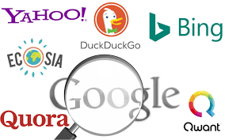
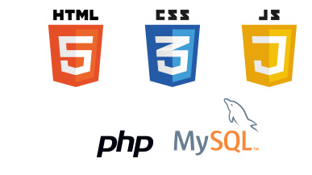

I/ Web ≠ Internet
Internet est un réseau d'ordinateurs qui communiquent entre eux. Il est utilisé par diverses applications :
- le courrier électronique (protocole SMTP)
- le transfert de fichiers (FTP)
- le web et ses liens hypertextes (HTTP).
Le web a été inventé par Tim Berners-Lee en 1989 au centre
européen de recherche nucléaire.
2004 : web 2.0 (= web participatif).
Exemple de localisateur uniforme de ressources (URL)
L'URL https://www.exemple.com/mondossier/pagehtml#endroit est constituée :
- du protocole https (sécurisé)
- du nom de sous domaine www.exemple.com lui-même composé :
- du sous-domaine www
- du nom exemple
- de l'extension com
- du chemin de la ressource mondossier/page.html
- parfois, une ancre #endroit pour indiquer un endroit précis.
II Les moteurs de recherche
Les moteurs de recherche fonctionnent en 3 temps :
- exploration : des robots (crawlers) parcourent le web.
- indexation : les données sont analysées et classées dans les bases de données.
- requête : l'internaute interroge l'index.

Exemple : Google trie les pages selon leur popularité avec l'algorithme PageRank.
Pour améliorer un référencement, on peut définir des mots-clés SEO ou payer SEA.
III Les langages du web
- Le HTML est un langage de balisage (structure du contenu).
- Le CSS est un langage de mise en forme (style).
- Javascript est un langage de programmation qui permet de rendre la page interactive (boutons, calculs, etc.).

IV Sécurité et confidentialité sur le web
Notions juridiques
Le règlement Général sur la Protection des Données RGPD est une loi européenne qui impose aux sites de protéger les données personnelles et d'obtenir le consentement des utilisateurs.
Un contenu sous licence Creative Commons peut être réutilisé sous certaines conditions.
Cookie et tracking
- Utile : garder une session ouverte, un panier d'achat, la langue.
- Intrusif : suivre la navigation pour proposer de la publicité ciblée
Les maliciels (logiciels malveillants)
- Un vers : se duplique pour infiltrer d'autres ordinateurs.
- Un cheval de troie : logiciel caché dans un programme légitime
- Un logiciel espion (spyware) : collecte les informations à l'insu de l'utilisateur.